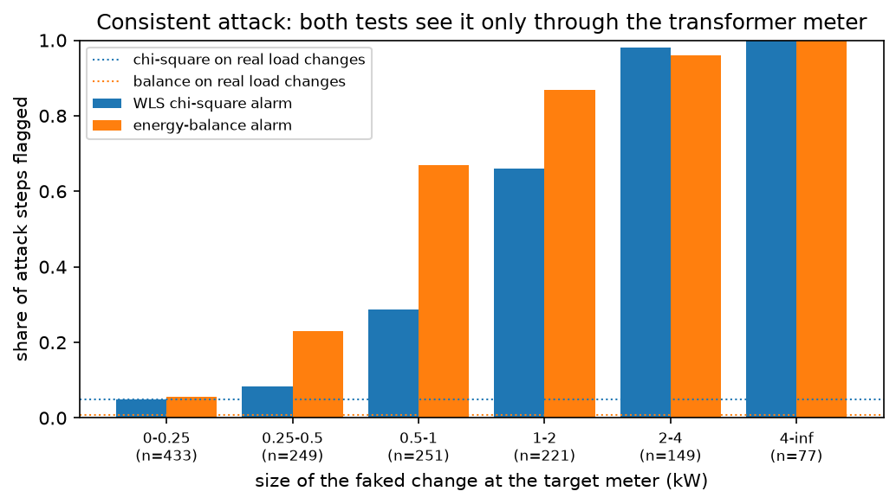

For four years I worked on smart-metering systems in Nigeria. Two situations kept coming back. A meter that undercounted and a customer whose usage really dropped looked the same on the dashboard, and comparing the meter with its neighbours flagged both as faulty. When a building's data concentrator (gateway) failed, every meter behind it went silent at once, and the neighbour comparison stopped working because the neighbours were silent too. This project rebuilds both situations in simulation, adds a third (an attacker who edits readings so that they still look physically correct), and asks: how well do the standard checks separate these cases, where do they fail, and does combining them help?
Grid and load. SimBench feeder 1-LV-semiurb4: one 0.4 MVA transformer, 44 buses, 41 customers, one PV unit, three cables, each treated as one gateway. Four weeks of 15-minute profiles (2,688 steps) drive an AC power flow in pandapower. SimBench reuses 10 load shapes for 41 customers, so each customer gets its own smooth random variation (about 30 %). Without it, neighbours would be scaled copies of each other and the peer check would look far better than it can be.
Meters. Transformer P, Q and voltage (0.5 % noise, assumed trusted); P and Q at every customer (1.5 %); voltage at the last customer of each cable (0.5 %). Weighted least squares (WLS) state estimation on clean readings reproduces the power flow, and the chi-square statistic follows its theoretical distribution (mean 4.96 for 5 degrees of freedom).
Five classes. 300 one-day episodes (60 per class), each with at most one event starting partway through the day:
| Class | Simulation |
|---|---|
| Normal | True values plus noise. |
| Real load change | One customer's demand ×1.5–3 or ×0.2–0.6; power flow re-run, so all readings stay consistent. |
| Meter fault | Only the reported value changes: gain 0.5–0.8, stuck, or slow drift. |
| Communication loss | One meter missing or stale, or a whole gateway silent. |
| False-data attack | Naive: random offset. Consistent: the attacker scales a load in a copy of the grid, runs a power flow, and writes the result into the target meter and the nearby voltage meter. The attacker knows the grid model but cannot touch the transformer meter. |
All detectors first mark a reading that did not arrive on time as communication loss, as any metering head-end would. (1) WLS with the chi-square test and the largest normalised residual (LNR), which blames one reading as bad data. (2) Peer check: each customer is predicted from the five customers it historically tracks; a sustained deviation is called a meter fault. (3) Peer check + energy balance: a deviating meter is a real load change if the transformer total still adds up; otherwise a meter fault if it reads low, an attack if it reads high. (4) Classifier: gradient-boosted trees on per-meter features built from the same signals, fitted on days 0–14, alarm threshold set on days 15–20 to match the rules' false-alarm level (about 1 % of normal readings), tested on days 21–27. Rules (2) and (3) use only normal history; no detector is tuned on the test days.

| Test events, days 21–27 (number) | 1. WLS | 2. Peer | 3. Peer + balance | 4. Classifier |
|---|---|---|---|---|
| Attack, consistent (7) | 0 % | 0 % | 43 % | 71 % |
| Attack, naive (7) | 0 % | 0 % | 57 % | 57 % |
| Real load change, down / up (6 / 8) | 0 / 0 % | 0 / 0 % | 33 / 100 % | 100 / 88 % |
| Meter fault, stuck / gain / drift (5 each) | 0 / 20 / 0 % | 60 / 60 / 0 % | 20 / 60 / 0 % | 100 / 60 / 40 % |
| Communication loss, all kinds (15) | 100 % | 100 % | 100 % | 100 % |
| False alarms (normal meter-steps) | 0.1 % | 0.8 % | 0.8 % | 1.0 % |
This is a simulation on one public feeder with synthetic customer variation. Each episode holds a single event that lasts to the end of the day; real faults overlap and persist for weeks. The fault/attack rule uses only the direction of the change, so downward attacks are labelled as faults. Slow drift is hard for every method here. The test set is small, and the classifier has learned the habits of this simulator, so its numbers should not be read as field performance.
On a feeder metered mainly at the customers, a lot depends on one measurement: the transformer reading is the only physical cross-check. Making estimation robust to wrong data is therefore partly a question of where to add redundant measurements, and how to use time history, which static WLS ignores. Those are the questions I would like to study next: forecast-aided state estimation, measurement placement for bad-data identification, and real smart-meter data on feeders with rooftop solar.